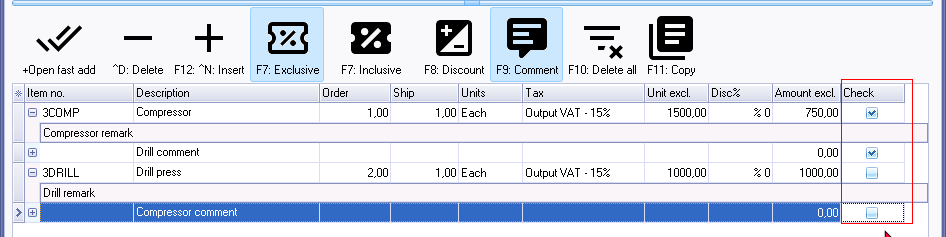

Dynareg - Checkbox in documents
Dynareg - Checkbox in document lines plugin
|
|
Dynareg Checkbox in document lines plugin - Shop - Licence : Once-off - Enable : "Documenten - Check box in documentregel" |

The "Dynareg - Checkbox in document lines" plugin adds a "Check" column to the lines in the document entry screen, allowing users to tick or untick checkboxes for selected items. These checkboxes are available for both sales and purchase documents (invoices, credit notes, quotes, purchases, supplier returns, and orders).

This plugin ensures that the selected checkboxes are saved and retained even after copying or converting documents. However, it's worth noting that checkboxes for comments will not be retained after copying or converting documents.
Advantages of checkboxes
Having a check column for items in the document entry screen offers several advantages:
- Easier Control with Many Items: When dealing with documents containing numerous items, such as invoices with multiple line items, having a check column allows users to easily keep track of which items have been processed, verified, or attended to. This can streamline workflows and reduce the likelihood of overlooking items.
- Improved Accuracy and Accountability: By providing a visual indicator (such as a checked box) next to each item, users can quickly verify that all necessary actions have been taken for each item. This can enhance accuracy in document processing and help ensure that no items are missed or duplicated.
- Efficient Order Fulfillment: In scenarios like purchase orders or sales orders, the check column can be used to mark items as collected or fulfilled. This is particularly useful in retail or warehouse environments where goods need to be checked off as they are picked up or shipped out. It helps in ensuring that all items are accounted for before finalizing the transaction.
- Enhanced User Experience: The check column provides a straightforward and intuitive interface for users to manage document entries. It reduces the cognitive load by offering a visual cue for item status, making the overall process more user-friendly.
- Audit Trail and Documentation: The checkboxes serve as a form of documentation, indicating which actions have been completed or which items have been processed. This can be valuable for audit purposes or for tracing the history of document entries.
Overall, the check column in the document entry screen offers convenience, accuracy, and efficiency in managing documents with multiple items, contributing to smoother operations and improved user experience.